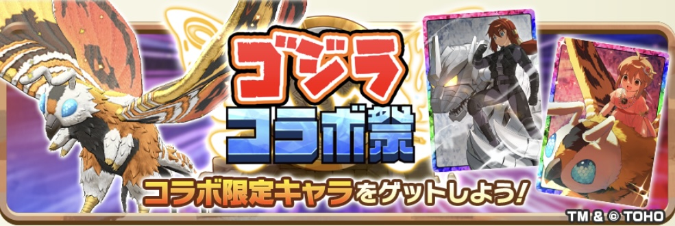
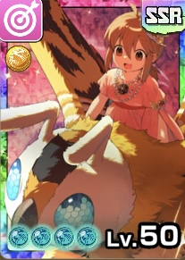
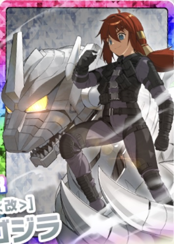

ゴジラコラボ祭

ピックアップモンスター
ピックアップアシストカード

モスラ
黄オーラ
創造
SSR / 命中
モン類上限解放+80に加えてオーラトレブースト+15%を2つ持っていて、合計30%になります。 最近はトレ効果アップの数値がどんどん上がっているので、その環境にちゃんと合わせてきた構ですよね。修行効果アップ+11%もついています。 能力で面白いのは「幽玄なる鱗翅」。 自身黄のバト…

メカゴジラ
白オーラ
獣族
SSR / かしこさ
モン類上限解放+80に加えてオーラピークターンアップ+2まで持っているカードです。 トレ効果アップは+11%と+8%で合計19%、オーラEXトレパワーアップ+50%、オーラ忠誠度効果アップⅡ+40%、忠誠度効果アップも合計45%と、育成まわりはかなりそろっています。 かしこさアッ…